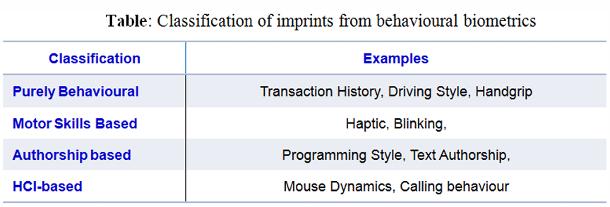
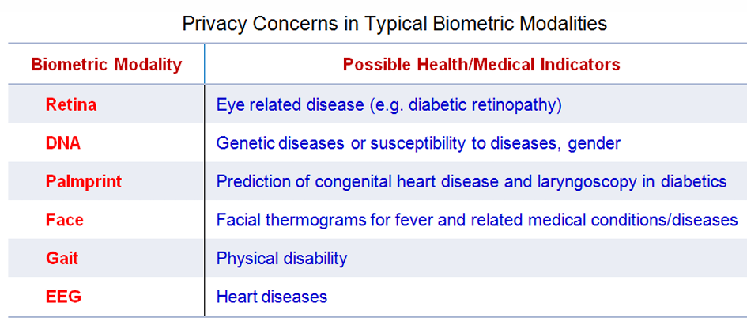
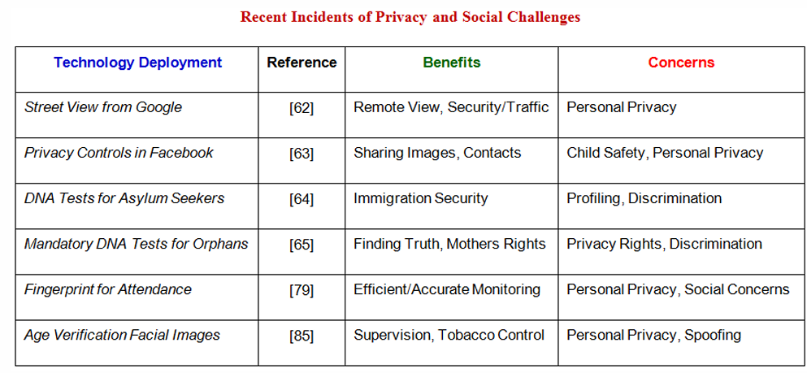
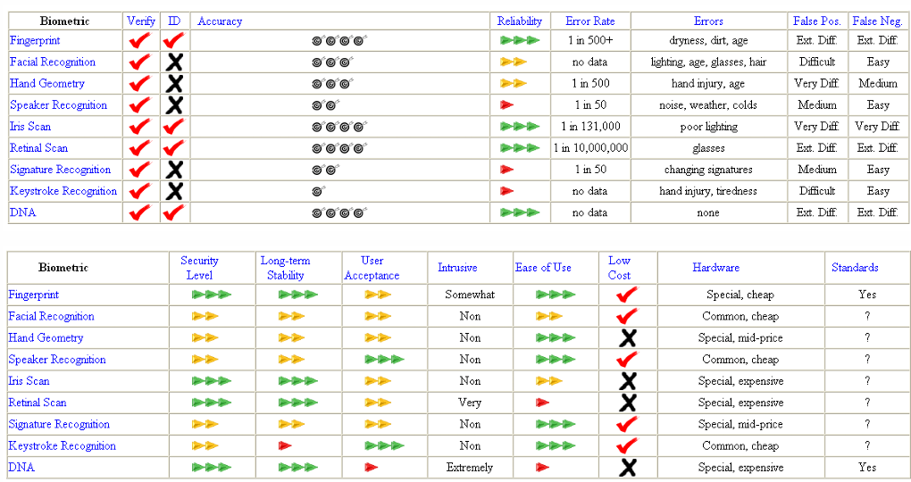
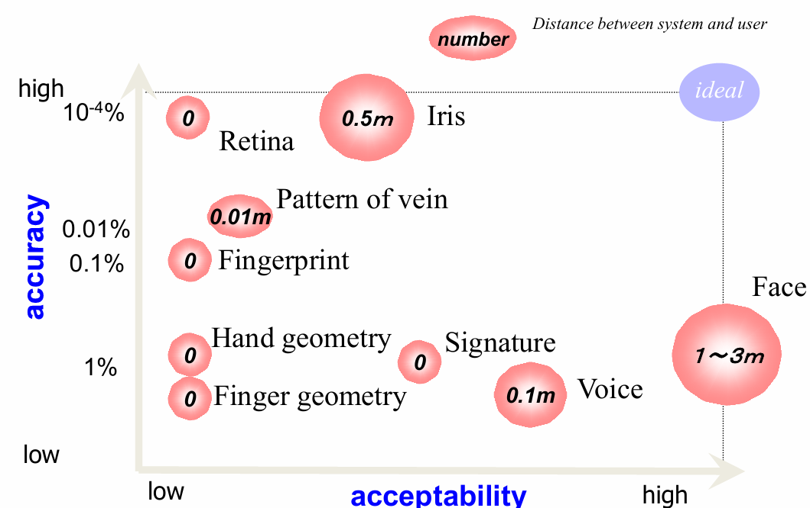

COMP4136 Security & Data Protection — Notes
1. Data Protection Plan
Five Key Steps
-
Risk Assessment
-
Calculate risk priority:
Risk = Asset Value × Probability of Loss. - List assets, potential losses, and vulnerabilities.
-
Calculate risk priority:
- Security Policy — define roles, acceptable risks, and improvement strategies.
- Implementation Plan — deploy firewalls, encryption, and access controls.
- Security Organization — train staff and establish a dedicated security team.
- Security Audit — regular compliance checks and vulnerability assessments.
Security Considerations
- Factors: New tech, policies, standards, cost vs. loss, weakest link focus.
-
Trade-offs:
- Security vs. Ease of Use: Stronger measures can slow operations (e.g., 2FA delays).
- Security vs. Privacy: Monitoring improves detection but reduces anonymity.
2. Security Dimensions
| Dimension | Definition |
|---|---|
| Integrity | Prevents unauthorized data alteration (e.g., hashing). |
| Non-repudiation | Proves sender identity (e.g., digital signatures). |
| Confidentiality | Restricts data access (e.g., AES encryption). |
| Availability | Ensures resources are accessible (e.g., DDoS protection). |
| Privacy | Ensures data is accessible only to authorized parties. |
| Authenticity | Ensures the identity of message sender or system user. |
3. Encryption & Cryptography
Symmetric vs Asymmetric
| Feature | Symmetric | Asymmetric |
|---|---|---|
| Key Usage | Single shared key | Public/private key pair |
| Speed | Faster (AES) | Slower (RSA, ECC) |
| Use Case | Bulk data encryption | Key exchange, signatures |
Digital Envelope
- Encrypt data with symmetric key (AES).
- Encrypt that key with recipient's public key (RSA).
- Send both ciphertexts.
PKI (Public Key Infrastructure)
- CA: issues certificates.
- Digital certificate: binds identity to a public key.
- RA: registration authority verifies applicants.
SSL/TLS Handshake (summary)
- ClientHello (algorithms + random).
- ServerHello (certificate + random).
- Key exchange (pre-master encrypted).
- Derive session keys (symmetric).
- Verify integrity (MACs / AEAD).

4. Threats & Mitigations
Backdoor / Adversarial Attacks
Poisoning or input manipulation — defend with data purification and model hardening (e.g., adversarial training, input sanitization).
Bot Attacks
Good bots (search) vs bad bots (DDoS, scrapers). Mitigations: CAPTCHA, IP/geo-blocking, Cloud WAF, rate limiting.
5. Legal & Compliance
- Authentication: digital certificates for provenance.
- Report integrity: use SHA-256 hashing to detect tampering.
- Non-repudiation: XML signatures and timestamps where needed.
6. Advanced Topics
XML Schema & Non-Repudiation
W3C Reference: XML Schema
Public Key Cryptography Workflow
- Encrypt plaintext with recipient’s public key.
- Transmit ciphertext.
- Decrypt using recipient’s private key.

Digital Watermarking (techniques focus)
Definition & Purpose
A digital watermark embeds an identifier into a carrier (image/audio/video) for authentication, copyright protection, or tracking.
Key Properties
- Imperceptibility — invisible to users
- Robustness — survives compression/attacks
- Fragile — useful for tamper detection
- Capacity and Speed
Techniques — Spatial Domain
LSB Substitution
Replace least-significant bits of pixels with watermark bits. Simple and fast but fragile (lossy compression destroys it).
Patchwork
Statistically alter random patch brightness pairs; more robust to simple noise but weak to geometric transforms.
Techniques — Frequency Domain
DCT-Based
Divide image into 8×8 blocks, embed in mid-frequency DCT coefficients — robust to JPEG compression.
DWT-Based
Decompose image into sub-bands (LL, LH, HL, HH); embed in LL for robustness or HH for invisibility.
Spread Spectrum
Embed pseudo-random noise across coefficients — very robust but more complex.
Attacks & Countermeasures
- Collusion: average copies — use robust frequency-domain methods.
- Lossy compression: embed in mid-frequency DCT coefficients.
- Geometric attacks: use DWT or registration markers.
Pattern Recognition for Biometrics — Techniques
Pipeline
- Segmentation — isolate the region of interest (e.g., iris, fingerprint).
- Feature extraction — reduce raw data to discriminative descriptors.
- Classification / matching — compare templates and decide.
Common Techniques (short)
- k-NN: distance-based, simple; good for small-scale template matching.
- K-Means: unsupervised clustering for grouping similar samples.
- Gabor filters: texture extraction (useful for iris, fingerprint enhancement).
- Hamming distance: common for binary codes (e.g., iris codes).
Bayesian Decision Theory (exam keywords)
Posterior: P(ω_i | x) = p(x | ω_i) P(ω_i) / p(x).
Decision rule: choose class with highest posterior. Useful for
threshold tuning (FAR / FRR trade-off).
Practical Notes & Examples (quick)
- Fingerprint: use Gabor filters → binarize → thin → extract minutiae (endings, bifurcations).
- Iris: normalize (rubber-sheet), apply Gabor filters, quantize phase → produce iris code → match with Hamming distance.
- Watermarking: for JPEG images prefer DCT mid-frequency embedding.
- Evaluation: ROC, FAR/FMR, FRR/FNMR, decidability index d'.
Biometric Systems
Definition
Automated identification using physiological (fingerprint, iris) or behavioral (gait, voice) traits.
Desired Properties
- Universality, Distinctiveness, Permanence, Collectability
- Performance, Acceptability, Robustness to Circumvention
System Components
- Acquisition
- Feature Extraction
- Matching
- Decision
Operating Modes
| Mode | Description | Example |
|---|---|---|
| Verification (1:1) | Claimed ID + biometric | Phone unlock |
| Identification (1:N) | Biometric vs database | Airport checks |
Errors in Identification
Confusion Matrix
| Predicted + | Predicted − | |
|---|---|---|
| Actual + | TP | FN |
| Actual − | FP | TN |
Biometric Modalities Notes
Accuracy ranking: DNA > Retina > Iris
DNA
- Uniqueness: only ~0.1% differs; forensic profiling.
- Pros: permanent, highly accurate; Cons: privacy, slow, contamination risk.
Ear
- Stable 3D shape; segmentation → matching.
- Challenges: hair occlusion; may require IR.
Thermogram
- Heat emission patterns; non-invasive.
- Challenges: sensor cost, environment sensitivity.
Fingerprint
- Ridges/valleys; common and accurate.
- Challenges: dry fingers, sensor noise, social acceptance.
Gait
- Distance-friendly; behavioral; low security due to variability.
Face
- High acceptance; affected by aging, expression, accessories.
Keystroke
- Typing rhythm; unobtrusive but variable.
Odor
- VOC-based; experimental and environment-sensitive.
Voice
- Convenient; noise-sensitive; lower distinctiveness at scale.
Retinal Scan
- Unique vessel pattern; invasive; low acceptance.
Iris
- Highly distinctive; requires cooperation; NIR illumination.
Hand Geometry, Vein, Signature
- Hand: simple but low distinctiveness.
- Vein: stable, fast, needs IR.
- Signature: accepted legally; forgeable.
Other & Emerging Biometrics
Physiological (less common)
Otoacoustic emissions, skin spectrum, lips movement, nailbed, knuckle creases, acoustic reflections, skin impedance, hand pressure profile, dental radiograph, bone transmission, bioelectric field, eye movement, finger wrinkles, dynamic grip, corneal topography, 3D finger, EEG.
Behavioral Biometrics
Purely behavioral (transactions), motor skills (grip), authorship (programming style), HCI (mouse/keystroke, touch patterns).

Deployment Challenges & Comparison
- Application perspective; privacy and social concerns.




Biometric Data Sensitivity
Irreversibility
Biometric traits cannot be reset; compromise is permanent.
Identity Theft
Stolen iris/fingerprint may enable impersonation in high-security contexts.
Storage & Protection
- Encrypt templates; strong access control; avoid raw images.
- Minimize collection; anonymize; clear retention policies.
Compliance & Ethics
- GDPR/PIPL: consent, cross-border rules, deletion.
- Risks: surveillance, discrimination; mitigate via transparency & audits.
Fingerprint — Techniques
Acquisition
- Optical (FTIR, sheet prism), electro-optical, solid-state (capacitive/thermal/e-field), ultrasound, sweeping.
- Specs: 500 dpi standard; sensing area; dynamic range.
Types & Quality
- Rolled, plain, latent; SNR/MTF quality metrics.
Classification
- Pattern area, core, delta, type lines; classes: whorl, loops, arch.
Feature Extraction
Enhancement
Minutiae Extraction
Binarization → thinning → crossing number (termination if cn(p)=1, bifurcation if cn(p)=3).
Matching
Correlation-based vs minutiae-based; relative minutiae representation (r, A_s, A_θ).
Iris Recognition — Techniques
- Acquisition: NIR illumination (700–900nm), ≥200 px across iris.
- Segmentation: pupil and limbic boundary detection.
- Normalization: rubber-sheet model.
- Feature extraction: Gabor filters → binary iris code.
- Matching: Hamming distance; handle non-ideal imaging conditions.
Multimodal Biometrics Systems
Why
Addresses noise, intra-class variation, spoofing, non-universality by combining modalities.
Operational Modes
- Serial, parallel, hierarchical.
Scenarios
- Multiple sensors/biometrics/units/snapshots/matching algorithms.
Fusion Levels
- Feature-level: concatenate/selection (dimensionality issues).
- Score-level: sum/max/product/weighted; logistic/SVM.
- Decision-level: majority voting, rank fusion, Bayesian fusion.
Examples
- Palmprint+face (touchless) score fusion → improved FAR/FRR.
- Palmprint+hand geometry → counters fake hand attacks.
Comments